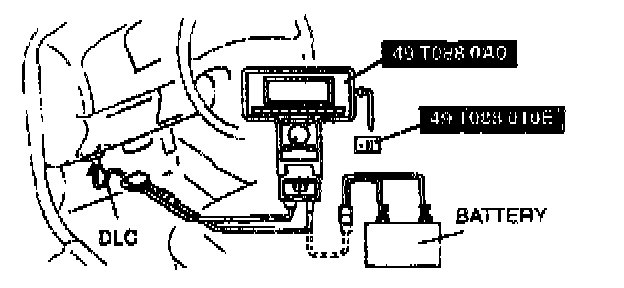
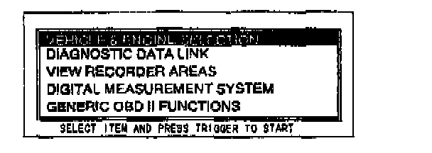
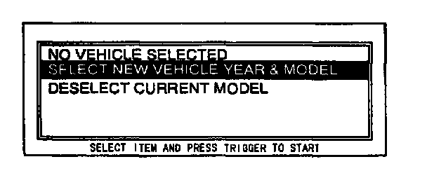
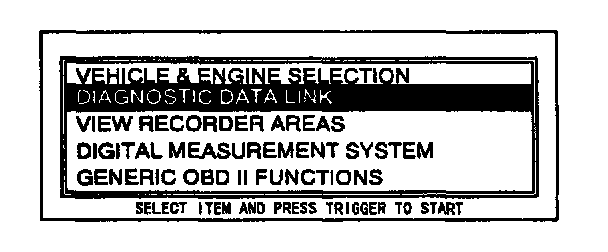
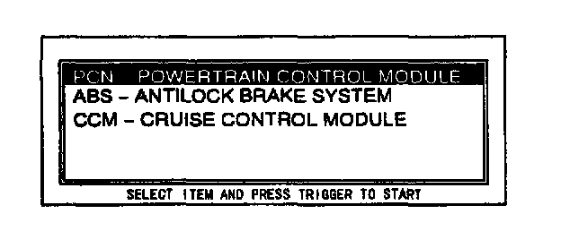
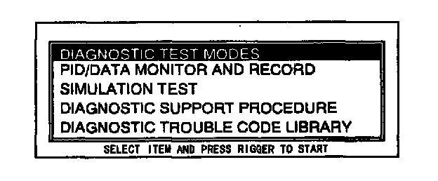
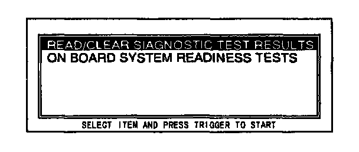

DTCs Procedure On-Board Diagnosis Test
NOTE:- This is a specific function.
- Start engine and keep it running. If engine won't start turn the ignition switch on during the procedure.

1. Perform the necessary vehicle preparation and visual inspection. Hook the NGS Tester up to the vehicle.

2. Move the cursor to VEHICLE & ENGINE SELECTION. Press the trigger key to enter this function.

3. Move the cursor to SELECT NEW VEHICLE YEAR & MODEL. Press the trigger key to enter this selection.
4. Move the cursor to 199-VIN#10:X. Press the trigger key to enter this selection.
5. Move the cursor to the appropriate model. Press the trigger key to enter this selection.
NOTE:
- Make sure the selected vehicle is correct.
6. A vehicle selection screen showing the selected vehicle will be displayed. Move the cursor to the vehicle selected. Press the trigger key.

7. Move the cursor to DIAGNOSTIC DATA LINK on the main menu screen. Press the trigger key to enter into menu system diagnostics.

8. Move the cursor to PCM - POWERTRAIN CONTROL MODULE. Press the trigger key to enter this selection.

9. Move the cursor to DIAGNOSTIC TEST MODES.
Press the trigger key to enter this selection.

10. Move the cursor to READ/CLEAR DIAGNOSTIC TEST RESULTS. Press trigger key to enter this selection.
11. Press START.
12. Retrieve DTCs.